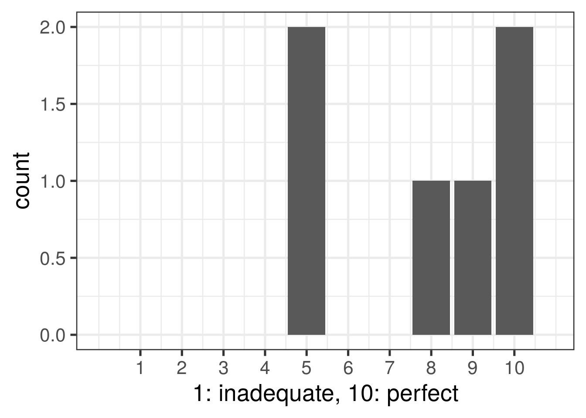

2.1 What 3 words would you use to describe our team culture?
independent, relaxed, supportive
organized/helpful/friendly
supportive, dedicated, curious
collaborative, supportive, productive
Helpful, safe, encouraging
Independent, creative, supportive
2.2 What do you like most about working here?
Getting to learn so many new things in a not super stressful way
Lots of room to grow, no expectation that you know everything, and very supportive of people learning new things
my colleagues are great
Learning loads of things that are really helpful for my scientific career in a team where everyone is happy to help, and where the PI is giving me feedback and pushing me to grow. Also I like that the human part is not lost.
Support for learning and career development at every stage
There’s a huge amount to learn, and opportunity to improve many skills
2.3 What do you like least about working here?
I don’t think there is something I dislike
NA
Too many slack channels
pay and career growth are questionable
Can sometimes fell a bit isolated, but thats probably more an issue with remote work in general
There is sometimes not enough context or explanation given for the goals of a project, which can make it hard to jump in.
2.4 How happy are you in the team?
2.5 Is there something that could be provided to make you happier?
Excited to get back in the lab and work more closely with others
upward career path.
Weighted blankets
No
I like working on projects with one other person
No.
2.6 What is your impression of social life in the team? Too social, not enough, or just right? If you want to improve the social life in the lab, what are your suggestions for achieving this?
Social life is right
once the pandemic is closer i think the team will get to know each other better.
It feels not quite social enough, but this probably mostly has to do with inherent COVID restrictions which can’t be easily avoided. I’m not sure the best way to improve.
Hard to answer this question given that we’ve been WFH for over a year - I think we are the right amount of social
I think we could be a bit more social, but it’s difficult right now during the pandemic
I think we are doing what we can with the extenuating circumstances. I am glad we are getting back to doing happy hours now the weather is nice.
2.7 How comfortable do you feel sharing personal concerns (housing, financial, family, physical or mental health) with me?
2.8 Do you feel explicit or implicit pressure to work more hours than you feel is healthy?
2.9 Do you feel explicit or implicit pressure to avoid taking vacations?
2.10 Have you experienced or witnessed a hostile work environment in the team? (bullying, gender harassment, sexual harassment)
2.11 How well does the team communicate as a whole?
2.12 What are some ways that we could improve communication in the team?
I feel like whatever answer I would give to this question is less relevant now that Lieber is opening back up
I think that we communicate very well.
We need to encourage more collaboration to develop less experienced members as well as encourage people to ask for help faster.
On personal projects, it’s sometimes hard to get as much external feedback as would be ideal. Assigning multiple people to a particular project can improve internal communication and reduce the need for frequent feedback from you.
I think it is ok and slack is a perfect platform to do it.
I liked discussing the “nuts and bolts” of our cluster usage/needs. Maybe we can focus some of our lab discussions on the tech/code side in addition to the science side. Also we never really put together the code review sessions and I feel like that would be a useful tool. Some times I am unsure which meetings I am expected to attend.
2.13 Do you feel that lab rules/policies are clear? Are there unspoken rules or policies that you feel should be more clearly communicated?
I feel pretty good about policies
Rules are clear.
Lab rules are clear to me
I guess most rules are unspoken. I don’t think we have a behavioral issue but any specific policies could be put in writing.
if I had to give one, I would say baseline expectations across all projects
Rules are clear.
2.14 Are there policies you feel should be explicitly written? If so, please explain which ones.
NA
No
No.
No
No
Guidelines for data privacy, what should we be careful to keep secure?
2.15 Do you feel that the same rules apply to everyone in team? If not, please explain.
Yes
Yes
Yes.
Yes
yes
2.16 Do you feel empowered to make suggestions to me to improve the team culture/ organization?
2.17 Do you feel empowered to make suggestions to your colleagues to improve the team culture/ organization?
2.18 If you do not feel empowered to make suggestions to your colleagues in the team or to me to improve the team culture/ organization, please tell me more about this.
NA
N/A
N/A
NA
NA
2.19 Do you feel you have enough feedback on your project?
2.20 Do you feel you have enough time to meet with me?
2.21 How useful do you find one-on-one meetings with me?
2.22 Is there something that could make these meetings more useful or productive?
I think everything is okay
My meetings with you are always very helpful.
I think the 1on1s on Monday could be a bit longer, sometimes it feels rushed and I feel bad delaying the next meeting if I have a few more things to say. I preferred having a longer and more flexible 1on1 built in to the week.
NA
Maybe an agenda
No, they are productive.
2.23 Do you think the current system of formal scheduled weekly one-on-one meetings is working? Should these be less frequent, more frequent, or stay as is?
The current system is good.
Yes and maybe paired analysis sessions would be good
As is is fine, might like more time but I could request it on Calendly
I think once a week is a good frequency
I think weekly is good.
It works and I really like this system. I think it should stay as it is.
2.24 Do you think you would benefit from more formal feedback on your progress?
No
Yes
Yes
Yes, if possible, though it doesn’t need to be formal.
I think the feedback I receive is excellent
Yes, especially when it comes to code in things I am learning
2.25 How supported do you feel by me, and do you think that you are getting the mentoring, career advice, and general guidance to succeed?
2.28 What kind of advice or information would be useful to discuss at such an Annual Mentoring Meeting?
Skills that need to be learned. Areas of weakness that need to be improved.
Career goals & next steps at LIBD. Potential opportunities (projects, talks, ect.)
How to apply to phd programs. Leo and I have already talked about this.
Our current annual meetings are formatted well.
NA
How to get promoted
2.29 Do you have any explicit feedback on how I can improve my mentoring style?
No
Probably a little more structure in terms of expectations around progress and deadlines.
NA
The current style is very good.
I think you’re a great mentor.
Not really
2.30 Do you feel it is easy to get information from me?
2.31 Do you feel it is easy to get information from other people in the team?
2.32 How useful do you find team meetings?
2.33 Is there something that could make team meetings more useful or productive?
We could maybe focus more on problems we encounter/ are working on during the week.
Maybe a scheduled agenda
I think our meetings are very productive.
No
It’s nice to hear what everyone is up to in their individual projects, but its not always useful (it can be easy to check out). Maybe we could make the Notion board more of a part of it? Do a number rundown (we put up x number of tasks to do and got y done). It can be easy to forget the Notion board since we don’t really engage with it at meetings. My favorite part of the when everyone gets chatting about a subject work related or not.
they’re more or less fine as-is. The only thing I can think of that could be useful is having someone take meeting notes, so we know what was covered. Not urgent though.
2.34 How useful do you find sub-group meetings?
2.35 Is there something that could make sub-group meetings more useful or productive?
No
No.
No
I find meetings focused on one topic or goal to be the most productive, maybe make a conscious effort to record what progress/decisions were made on slack
N/A
not entirely sure what a sub-group meeting is but if it’s a meeting on a project or topic then I think they’re fine as-is - maybe delegating note-taking would be and having a formal agenda after each meeting
2.36 How useful do you find the journal club?
2.37 Is there something that could make the journal club more useful or productive?
some sort of shared repository for notes, or summary
more accountability to read the article. I feel it’s not as interactive as it could be.
I find the journal club most useful when I am the one presenting because it forces me to learn a paper. If the paper someone else is presenting is too long or specific it can be hard to engage with it. Maybe more guidance on topics/how to find papers good for the club?
No.
No
Sometimes journal club is on topics that are very far outside my realm of knowledge and the work I do. But that’s ok because I get to learn about new things.
2.38 How much freedom do you feel you have to decide how you do your work?
2.39 How collaborative do you think the team is?
2.40 Do you perceive that there is any favoritism in the team? Please elaborate.
none whatsoever
No
No
No.
No
no
2.41 Are there any issues with collaborations in the team that are not working? Please explain.
No.
No
This has gotten better recently but I feel like collaborations do not happen all that often
No
no
I feel good about the projects I am collaborating with others on
2.42 Are you aware of the team’s authorship policies?
2.43 Do have any concerns about anticipated authorship on papers describing your work or collaborations that you are involved with?
There needs to be upfront discussions with the labs we collaborate with about authorship
No
No
No, but authorship hasn’t always been explicitly discussed.
no
No
2.44 Please rate whether you feel the team provides you with the tools and technologies you need?
2.45 Do you feel you have received proper training to perform the techniques required for your work?
Yes, and if I feel shaky on something I feel comfortable asking questions
Yes.
yes
Yes
More-or-less - could use more detailed background information/notes/history when taking over projects that are already partially completed
Yes
2.46 Is there further training you would like to receive to help you accomplish your goals?
Support in establishing a fully voluntary book club would be cool. Like a fully-optional bioinformatics “class.” Rstats Club is good but I feel like they are one-off lessons that don’t accumulate over time the same way a book club would.
Get more in-depth building R packages, get more confident doing statistics
Yes
No
Opportunity to attend conferences provides that well enough.
More data science training
2.47 How easy is it easy to locate things in at JHPCE / GitHub?
2.48 How often do you encounter issues that could have been averted if things were better organized? E.g. missing README or GitHub repository.
2.49 Please tell me more about the kinds of organizational issues you have encountered and any suggestions to improve such issues.
Sometimes I get handed scripts to use as examples and I have a hard time finding the data objects that the scripts are using. Or I have a hard time finding the output of the scripts.
Mostly just messy directories and filenames. I like the move to “by-grant” organization on JHPCE.
I have not encountered any issue
NA
still need improvement on interactions with broader institute.
Others’ code is often not documented, or context for performing certain code does not exist.
2.50 What is your opinion of the level of technical support in the team?
2.51 What is your opinion of the level of administrative support in the team?

2.52 What is your impression of the funding of the team?
2.53 If we had the funds to hire one more full-time person, what kind of person should we hire and what role would they play in the team?
I’m not sure what is needed.
Someone who has strong R and or python skills and has studied/and experience in bioinformatics. As for role, more analysis work (idk this is a hard one to answer)
A math-y person to help explain the type of statistics we use.
I feel like someone to take some of the pressure off your load would be helpful to the team. You seem very busy and sometimes it would be nice to have someone with about your level of knowledge and experience (or even slightly less) to consult about certain issues.
Staff scientist level/post-doc would be perfect
I’m not sure about that
2.54 Is there something that you experienced in a previous job that you wish we also did here?
Absolutely not
No.
No
Raises
Team meeting where people presented one slide (usually a graph) of what they did on their project that week
NA
2.55 Are there any concerns or other areas of the team you believe could be improved that have not been addressed in previous questions? Please list any other areas you think could be improved or should be addressed.
Returning to the lab expirations and timeline
NA
My only concern at the institute is that sometimes the amount of information on slack can be overwhelming.
No
No
No.
2.56 Finally, did you find this survey useful? If yes, how often should the survey be conducted?
The survey is good and could be conducted annually. Some of the 1-10 questions could confuse people wo don’t read the question well enough on their initial read (like me), because they use the 10-end of the scale to represent a lower magnitude of something bad (like ‘Not pressured’) and the 1-end of the scale to represent a higher magnitude of something bad (like ‘Very pressured’). Ultimately not a problem for me because I re-read the scale labels but this might cause some erroneous answers.
Somewhat. This could maybe be a yearly thing (or a couple times a year).
It was useful, but it was a bit long. I think yearly for something this long, maybe something more concise if we would do it with more frequency. Also in a group this small I feel like it is only so anonymous and we have a lot of discussions about this kind of stuff as a group already.